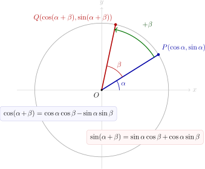
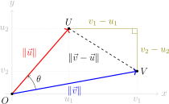

Hoofdstuk 3Goniometrische formules

Leerplandoelstellingen (GO! Navigator)
Gevorderde wiskunde (WD3_06.08)
-
• WD3_06.08.22 (MD 06.08.23) De leerlingen gebruiken goniometrische formules om uitdrukkingen te vereenvoudigen.
-
– afbakening: formules: som- en verschilformules, verdubbelingsformules
-
Didactische uitwerking: som- en verschilformules voor sinus, cosinus en tangens, verdubbelingsformules, halveringsformules (formules van Carnot), exacte berekeningen van goniometrische getallen, en bewijzen van goniometrische identiteiten.
I Optellingsformules
1 Wij hopen …
Het volgende zou leuk zijn:
\(\seteqnumber{0}{}{0}\)\begin{align*} \sin (\alpha +\beta ) &\ \xcancel {=}\ \sin \alpha +\sin \beta ,\\ \cos (\alpha +\beta ) &\ \xcancel {=}\ \cos \alpha +\cos \beta ,\\ \end{align*}
Laten we eens proberen:
\(\seteqnumber{0}{}{0}\)\begin{align*} \sin (30^\circ +60^\circ ) &= \sin 90^\circ = 1,\\ \sin 30^\circ + \sin 60^\circ &= \tfrac 12 + \tfrac {\sqrt 3}{2} \ne 1. \end{align*} Jammer…Maar, we zullen zoeken en vinden…
2 Optellingsformules voor cosinus
Formule voor \(\cos (\alpha -\beta )\)
\[ \boxed {\;\cos (\alpha -\beta )=\cos \alpha \cos \beta +\sin \alpha \sin \beta \;} \]
Ken je nog de formules voor het inproduct:
\[ \vec u\cdot \vec v=u_1v_1+u_2v_2, \qquad \vec u\cdot \vec v=\lVert \vec u\rVert \,\lVert \vec v\rVert \cos \theta . \]
Bewijs (met inproduct op de eenheidscirkel).
\[ P=(\cos \alpha ,\sin \alpha ),\qquad Q=(\cos \beta ,\sin \beta ). \]
Enerzijds:
\begin{align*}
\vec {OP}\cdot \vec {OQ} &=\lVert \vec {OP}\rVert \,\lVert \vec {OQ}\rVert \cos (\alpha -\beta )\\ &=\cos (\alpha -\beta ).
\end{align*}
Anderzijds:
\[ \vec {OP}\cdot \vec {OQ} =\cos \alpha \cos \beta +\sin \alpha \sin \beta . \]
\[ P=(\cos \alpha ,\sin \alpha ),\qquad Q=(\cos \beta ,\sin \beta ). \]
Enerzijds:
\(\seteqnumber{0}{}{0}\)\begin{align*} \vec {OP}\cdot \vec {OQ} &=\lVert \vec {OP}\rVert \,\lVert \vec {OQ}\rVert \cos (\alpha -\beta )\\ &=\cos (\alpha -\beta ). \end{align*} Anderzijds:
\[ \vec {OP}\cdot \vec {OQ} =\cos \alpha \cos \beta +\sin \alpha \sin \beta . \]
Dus:
\[ \boxed {\cos (\alpha -\beta ) =\cos \alpha \cos \beta +\sin \alpha \sin \beta }. \]
Formule voor \(\cos (\alpha +\beta )\)
\[ \boxed {\;\cos (\alpha +\beta )=\cos \alpha \cos \beta -\sin \alpha \sin \beta \;} \]
\(\seteqnumber{0}{}{0}\)\begin{align*} \cos (\alpha +\beta ) &= \cos \bigl (\alpha -(-\beta )\bigr ) \\ &= \cos \alpha \cos (-\beta )+\sin \alpha \sin (-\beta ) &&\text {(formule voor $\cos (\alpha -\beta )$)}\\ &= \cos \alpha \cos \beta +\sin \alpha \cdot (-\sin \beta ) &&\text {(tegengestelde hoeken).}\\ &= \cos \alpha \cos \beta -\sin \alpha \sin \beta \end{align*}
3 Optellingsformules voor sinus
Formule voor \(\sin (\alpha -\beta )\)
\[ \boxed {\,\sin (\alpha -\beta )=\sin \alpha \cos \beta -\cos \alpha \sin \beta \,} \]
\(\seteqnumber{0}{}{0}\)\begin{align*} \sin (\alpha -\beta ) &=\cos \!\bigl (90^\circ -(\alpha -\beta )\bigr ) &&\text {(complementaire hoeken)}\\ &=\cos \!\bigl (90^\circ -\alpha +\beta \bigr )\\ &=\cos \!\bigl ((90^\circ -\alpha )+\beta \bigr )\\ &=\cos (90^\circ -\alpha )\cos \beta -\sin (90^\circ -\alpha )\sin \beta &&\text {(cos optelling)}\\ &=\sin \alpha \cos \beta -\cos \alpha \sin \beta &&\text {(complementaire hoeken)}. \end{align*}
Formule voor \(\sin (\alpha +\beta )\)
\[ \boxed {\,\sin (\alpha +\beta )=\sin \alpha \cos \beta +\cos \alpha \sin \beta \,} \]
\(\seteqnumber{0}{}{0}\)\begin{align*} \sin (\alpha +\beta ) &=\sin \!\bigl (\alpha -(-\beta )\bigr )\\ &=\sin \alpha \cos (-\beta )-\cos \alpha \sin (-\beta ) &&\text {(gebruik $\sin (\alpha -\beta )$)}\\ &=\sin \alpha \cos \beta +\cos \alpha \sin \beta . &&\text {(tegengestelde hoeken)} \end{align*}
4 Optellingsformules voor tangens
Formule voor \(\tan (\alpha +\beta )\)
\[ \boxed {\,\tan (\alpha +\beta )=\dfrac {\tan \alpha +\tan \beta }{1-\tan \alpha \,\tan \beta }\,} \]
\(\seteqnumber{0}{}{0}\)\begin{align*} \tan (\alpha +\beta ) &= \frac {\sin (\alpha +\beta )}{\cos (\alpha +\beta )} && \text {(def.\ tan)}\\ &= \frac {\sin \alpha \cos \beta +\cos \alpha \sin \beta } {\cos \alpha \cos \beta -\sin \alpha \sin \beta } && \text {(opt.\ form.\ voor $\sin $ en $\cos $)}\\[0.3em] & \qquad \qquad \text {om $\tan \alpha $ en $\tan \beta $ te krijgen,}\\ & \qquad \qquad \text {delen we T en N door $\cos \alpha \cos \beta $}\\ &=\frac {\dfrac {\sin \alpha \cos \beta }{\cos \alpha \cos \beta } +\dfrac {\cos \alpha \sin \beta }{\cos \alpha \cos \beta }} {\dfrac {\cos \alpha \cos \beta }{\cos \alpha \cos \beta } -\dfrac {\sin \alpha \sin \beta }{\cos \alpha \cos \beta }}\\[0.3em] &= \frac {\dfrac {\sin \alpha \cancel {\cos \beta }}{\cos \alpha \cancel {\cos \beta }} +\dfrac {\cancel {\cos \alpha }\sin \beta }{\cancel {\cos \alpha }\cancel {\cos \beta }}} {\dfrac {\cancel {\cos \alpha }\cancel {\cos \beta }}{\cancel {\cos \alpha }\cancel {\cos \beta }} -\dfrac {\sin \alpha \sin \beta }{\cancel {\cos \alpha }\cancel {\cos \beta }}}\\ &= \frac {\tfrac {\sin \alpha }{\cos \alpha }+\tfrac {\sin \beta }{\cos \beta }} {1-\tfrac {\sin \alpha }{\cos \alpha }\cdot \tfrac {\sin \beta }{\cos \beta }}\\ & = \frac {\tan \alpha +\tan \beta }{\,1-\tan \alpha \,\tan \beta \,} && \text {(def.\ tan).} \end{align*}
Formule voor \(\tan (\alpha -\beta )\)
\[ \boxed {\,\tan (\alpha -\beta )=\dfrac {\tan \alpha -\tan \beta }{1+\tan \alpha \,\tan \beta }\,} \]
\(\seteqnumber{0}{}{0}\)\begin{align*} \tan (\alpha -\beta ) &= \tan \!\bigl (\alpha +(-\beta )\bigr )\\ &= \frac {\tan \alpha +\tan (-\beta )}{1-\tan \alpha \,\tan (-\beta )} && \text {(opt.\ form.\ tan)}\\ &= \frac {\tan \alpha -\tan \beta }{1+\tan \alpha \,\tan \beta } && \text {(tegeng.\ hoeken).} \end{align*}
Opmerking. De formules voor \(\tan (\alpha \pm \beta )\) zijn geldig als
\[ \cos \alpha \ne 0,\qquad \cos \beta \ne 0,\qquad 1\mp \tan \alpha \tan \beta \ne 0. \]
5 Overzicht
\[ \boxed { \begin {aligned} \sin (\alpha \pm \beta ) &= \sin \alpha \cos \beta \pm \cos \alpha \sin \beta ,\\ \cos (\alpha \pm \beta ) &= \cos \alpha \cos \beta \mp \sin \alpha \sin \beta ,\\ \tan (\alpha \pm \beta ) &= \dfrac {\tan \alpha \pm \tan \beta }{1\mp \tan \alpha \tan \beta },\\ \hint {\cot (\alpha \pm \beta )} &= \hint {\dfrac {\cot \alpha \cot \beta \mp 1}{\cot \beta \pm \cot \alpha }.} \end {aligned} } \]
-
• Neem overal de bovenste tekens voor \(\alpha +\beta \) en overal de onderste tekens voor \(\alpha -\beta \).
-
• De sinus is braaf en behoudt het teken; de vervelende cosinus wisselt het teken.
6 Oefeningen
p138 nr 2, 3, 4, 5, 6, 7, 8
II Verdubbelingsformules
We zoeken de goniometrische getallen van \(2\alpha \) \((\sin 2\alpha ,\ \cos 2\alpha ,\ \tan 2\alpha )\) uitgaande van de goniometrische getallen van \(\alpha \) \((\sin \alpha ,\ \cos \alpha ,\ \tan \alpha )\).
Het zou leuk zijn, mocht bv.
\[ \cos 2\alpha \ \xcancel {=}\ 2\cdot \cos \alpha . \]
We gaan dit na a.d.h.v. een voorbeeld:
\(\seteqnumber{0}{}{0}\)\begin{align*} \cos (2\cdot 30^\circ ) &= \cos 60^\circ = \tfrac 12,\\ 2\cdot \cos 30^\circ &= 2\cdot \tfrac {\sqrt 3}{2}=\sqrt 3 \ne \tfrac 12. \end{align*}
1 Formules
\[ \begin {aligned} \sin 2\alpha &= 2\sin \alpha \cos \alpha ,\\[0.2em] \cos 2\alpha &= \cos ^2\alpha -\sin ^2\alpha \;=\; 2\cos ^2\alpha -1 \;=\; 1-2\sin ^2\alpha ,\\[0.2em] \tan
2\alpha &= \dfrac {2\tan \alpha }{1-\tan ^2\alpha }. \end {aligned} \]
\begin{align*} \text {(1) }\ \sin 2\alpha & = \sin (\alpha +\alpha ) & & \text {(opt.\ form.\ $\sin $)} \\ & = \sin \alpha \cos \alpha +\cos \alpha \sin \alpha \\ & = 2\sin \alpha \cos \alpha . \\[0.4em] \text {(2) }\ \cos 2\alpha & = \cos (\alpha +\alpha ) & & \text {(opt.\ form.\ $\cos $)} \\ & = \cos ^2\alpha -\sin ^2\alpha \\ & = \cos ^2\alpha -(1-\cos ^2\alpha ) = 2\cos ^2\alpha -1 \\ & = (1-\sin ^2\alpha )-\sin ^2\alpha = 1-2\sin ^2\alpha . \\[0.4em] \text {(3) }\ \tan 2\alpha & = \tan (\alpha +\alpha ) & & \text {(opt.\ form.\ $\tan $)} \\ & = \frac {\tan \alpha +\tan \alpha }{1-\tan \alpha \,\tan \alpha } \\ & = \frac {2\tan \alpha }{1-\tan ^2\alpha }.\qquad \square \end{align*}
Opmerking. De formule voor \(\tan 2\alpha \) is geldig als
\[ \cos \alpha \ne 0,\qquad 1-\tan ^2\alpha \ne 0. \]
2 Toepassingen
Exacte berekeningen van goniometrische getallen
Gegeven: \(\sin \alpha =\tfrac {2}{3}\ \text { en }\ \alpha \in \mathrm {II}. \)
Gevraagd: \(\sin 2\alpha ,\ \cos 2\alpha ,\ \tan 2\alpha . \)
\begin{align*} &\cos ^2\alpha +\sin ^2\alpha =1 &&\Rightarrow \ \cos ^2\alpha =1-\sin ^2\alpha =1-\tfrac {4}{9}=\tfrac {5}{9},\\ &\alpha \in \mathrm {II}\Rightarrow \cos \alpha <0 &&\Rightarrow \ \cos \alpha =-\sqrt {\cos ^2\alpha }=-\tfrac {\sqrt 5}{3}.\\[0.4em] &\sin 2\alpha =2\sin \alpha \cos \alpha &&=2\cdot \tfrac {2}{3}\cdot \!\left (-\tfrac {\sqrt 5}{3}\right ) =-\tfrac {4\sqrt 5}{9},\\ &\cos 2\alpha =1-2\sin ^2\alpha &&=1-2\cdot \tfrac {4}{9}=\tfrac {1}{9},\\ &\tan 2\alpha =\dfrac {\sin 2\alpha }{\cos 2\alpha } &&=\dfrac {-\tfrac {4\sqrt 5}{9}}{\tfrac {1}{9}}=-4\sqrt 5. \end{align*}
Oefening 1
Bereken alle mogelijke waarden van \(\sin 2\alpha \), \(\cos 2\alpha \) en \(\tan 2\alpha \) als
-
(a) \(\sin \alpha = \dfrac {1}{\sqrt {5}}\) en \(\alpha \in \mathrm {II}\)
\(\seteqnumber{0}{}{0}\)\begin{align*} \cos \alpha &=-\sqrt {1-\sin ^2\alpha }=-\sqrt {1-\frac 15}=-\frac {2}{\sqrt 5},\\ \sin 2\alpha &=2\sin \alpha \cos \alpha =-\frac 45,\\ \cos 2\alpha &=1-2\sin ^2\alpha =1-\frac 25=\frac 35,\\ \tan 2\alpha &=\frac {\sin 2\alpha }{\cos 2\alpha }=-\frac 43. \end{align*}
-
(b) \(\cos \alpha = \dfrac {2}{\sqrt {13}}\) en \(\alpha \in \mathrm {IV}\)
\(\seteqnumber{0}{}{0}\)\begin{align*} \sin \alpha &=-\sqrt {1-\cos ^2\alpha }=-\sqrt {1-\frac 4{13}}=-\frac {3}{\sqrt {13}},\\ \sin 2\alpha &=2\sin \alpha \cos \alpha =-\frac {12}{13},\\ \cos 2\alpha &=2\cos ^2\alpha -1=\frac 8{13}-1=-\frac 5{13},\\ \tan 2\alpha &=\frac {\sin 2\alpha }{\cos 2\alpha }=\frac {12}{5}. \end{align*}
-
(c) \(\cos \alpha = -0.8\)
\[ \cos \alpha =-\frac 45 \quad \Rightarrow \quad \sin \alpha =\pm \sqrt {1-\cos ^2\alpha }=\pm \frac 35. \]
\(\seteqnumber{0}{}{0}\)\begin{align*} \alpha \in \mathrm {II}:& &\sin 2\alpha &=-\frac {24}{25}, &\cos 2\alpha &=\frac 7{25}, &\tan 2\alpha &=-\frac {24}{7},\\ \alpha \in \mathrm {III}:& &\sin 2\alpha &=\frac {24}{25}, &\cos 2\alpha &=\frac 7{25}, &\tan 2\alpha &=\frac {24}{7}. \end{align*}
p139 nr9, 10, 12
Een bewijs leveren
Voorbeeld. Bewijs voor alle \(\alpha ,\beta \):
\[ \cos ^2(\alpha -\beta )-\cos ^2(\alpha +\beta )=\sin 2\alpha \cdot \sin 2\beta . \]
Bewijs.
\(\seteqnumber{0}{}{0}\)\begin{align*} \cos ^2(\alpha -\beta )-\cos ^2(\alpha +\beta ) &=\bigl (\cos (\alpha -\beta )-\cos (\alpha +\beta )\bigr ) \bigl (\cos (\alpha -\beta )+\cos (\alpha +\beta )\bigr )\\ &=\bigl ((\cos \alpha \cos \beta +\sin \alpha \sin \beta ) -(\cos \alpha \cos \beta -\sin \alpha \sin \beta )\bigr )\\ &\quad \cdot \bigl ((\cos \alpha \cos \beta +\sin \alpha \sin \beta ) +(\cos \alpha \cos \beta -\sin \alpha \sin \beta )\bigr )\\ &=(2\sin \alpha \sin \beta )(2\cos \alpha \cos \beta )\\ &=(2\sin \alpha \cos \alpha )(2\sin \beta \cos \beta )\\ &=\sin 2\alpha \cdot \sin 2\beta .\qquad \square \end{align*}
Oefeningen: p. 140 nr.10
III Halveringsformules (= Formules van Carnot)
\[ \boxed {\sin ^2\alpha =\frac {1-\cos 2\alpha }{2}},\qquad \boxed {\cos ^2\alpha =\frac {1+\cos 2\alpha }{2}} \]
Bewijs. We vertrekken van de verdubbelingsformules.
\(\seteqnumber{0}{}{0}\)\begin{align*} \cos 2\alpha &= 1-2\sin ^2\alpha \\ \Leftrightarrow \quad 2\sin ^2\alpha &= 1-\cos 2\alpha \\ \Leftrightarrow \quad \sin ^2\alpha &= \frac {1-\cos 2\alpha }{2} \end{align*}
\(\seteqnumber{0}{}{0}\)\begin{align*} \cos 2\alpha &= 2\cos ^2\alpha -1\\ \Leftrightarrow \quad 2\cos ^2\alpha &= 1+\cos 2\alpha \\ \Leftrightarrow \quad \cos ^2\alpha &= \frac {1+\cos 2\alpha }{2} \end{align*}
Gevolg
\[ |\sin \alpha |=\sqrt {\frac {1-\cos 2\alpha }{2}},\qquad |\cos \alpha |=\sqrt {\frac {1+\cos 2\alpha }{2}}. \]
De vierkantswortel is steeds niet-negatief. Het kwadrant van \(\alpha \) bepaalt het teken van sinus en cosinus:
\[ \sin \alpha =\pm |\sin \alpha |,\qquad \cos \alpha =\pm |\cos \alpha |, \]
\[ \operatorname {teken}(\sin \alpha ),\ \operatorname {teken}(\cos \alpha ) \quad \text {volgens het kwadrant van }\alpha . \]
Andere vorm (vervang \(\alpha \) door \(\alpha /2\))
\[ \boxed {\sin ^2\frac {\alpha }{2}=\frac {1-\cos \alpha }{2}},\qquad \boxed {\cos ^2\frac {\alpha }{2}=\frac {1+\cos \alpha }{2}}. \]
Voorbeeld: bereken exact \(\sin 22.5^\circ \) en \(\cos 22.5^\circ \)
\(\seteqnumber{0}{}{0}\)\begin{align*} \sin ^2 22.5^\circ &= \frac {1-\cos 45^\circ }{2} = \frac {1-\tfrac {\sqrt 2}{2}}{2} = \frac {2-\sqrt 2}{4} \\ \Rightarrow \quad \sin 22.5^\circ &= +\sqrt {\frac {2-\sqrt 2}{4}} = \frac {\sqrt {\,2-\sqrt 2\,}}{2} \qquad (22.5^\circ \in \mathrm {I}) \end{align*}
\(\seteqnumber{0}{}{0}\)\begin{align*} \cos ^2 22.5^\circ &= \frac {1+\cos 45^\circ }{2} = \frac {1+\tfrac {\sqrt 2}{2}}{2} = \frac {2+\sqrt 2}{4} \\ \Rightarrow \quad \cos 22.5^\circ &= +\sqrt {\frac {2+\sqrt 2}{4}} = \frac {\sqrt {\,2+\sqrt 2\,}}{2} \qquad (22.5^\circ \in \mathrm {I}) \end{align*}
A Cosinusregel
In een willekeurige driehoek \(ABC\) noemen we de lengtes van de zijden tegenover de hoeken \(A\), \(B\) en \(C\) respectievelijk \(a\), \(b\) en \(c\).
Voor de zijde \(a\) tegenover de hoek \(\alpha \) geldt de cosinusregel:
\[ \boxed {a^2=b^2+c^2-2bc\cos \alpha }. \]
Kort bewijs. Kies \(A=(0,0)\) en \(B=(c,0)\). Dan is \(C=(b\cos \alpha ,b\sin \alpha )\) en geeft de afstandsformule
\[ \begin {aligned} a^2&=(c-b\cos \alpha )^2+(b\sin \alpha )^2\\ &=c^2-2bc\cos \alpha +b^2(\cos ^2\alpha +\sin ^2\alpha ) =b^2+c^2-2bc\cos \alpha . \end {aligned} \]
Analoog gelden
\[ b^2=a^2+c^2-2ac\cos \beta , \qquad c^2=a^2+b^2-2ab\cos \gamma . \]
De regel kan ook gebruikt worden om een hoek te berekenen:
\[ \cos \alpha =\frac {b^2+c^2-a^2}{2bc}. \]
B Inproduct
Definitie en meetkundige formule. Voor \(\vec u=(u_1,u_2)\) en \(\vec v=(v_1,v_2)\) in \(\mathbb {R}^2\) definiëren we
\[ \boxed {\;\vec u\cdot \vec v=u_1v_1+u_2v_2\;} \qquad \text {(definitie).} \]
Meetkundig geldt
\[ \boxed {\;\vec u\cdot \vec v=\lVert \vec u\rVert \,\lVert \vec v\rVert \cos \theta \;} \qquad \text {(meetkundige formule),} \]
waar \(\theta \) de (kleinste) hoek is tussen \(\vec u\) en \(\vec v\).

Bewijs van de gelijkwaardigheid. We leiden de meetkundige formule af uit de definitie.
-
1. Cosinusregel op de driehoek \(OUV\):
\[ \lVert \vec v-\vec u\rVert ^2 = \lVert \vec v\rVert ^2+\lVert \vec u\rVert ^2-2\,\lVert \vec u\rVert \,\lVert \vec v\rVert \cos \theta . \tag {1} \]
-
2. Algebraı̈sche uitwerking van de norm:
\[ \lVert \vec v-\vec u\rVert ^2 =(v_1-u_1)^2+(v_2-u_2)^2 =\lVert \vec v\rVert ^2+\lVert \vec u\rVert ^2-2\,(u_1v_1+u_2v_2). \tag {2} \]
Door (1) \(=\) (2) volgt
\[ u_1v_1+u_2v_2=\lVert \vec u\rVert \,\lVert \vec v\rVert \cos \theta , \]
dus de meetkundige formule volgt uit de definitie.
Eigenschappen. Voor alle \(\vec u,\vec v,\vec w\in \mathbb {R}^2\) en \(k\in \mathbb {R}\):
\(\seteqnumber{0}{}{0}\)\begin{align*} \vec u\cdot \vec v &= \vec v\cdot \vec u \quad &&\text {(commutatief)}\\ \vec u\cdot (\vec v+\vec w) &= \vec u\cdot \vec v+\vec u\cdot \vec w \quad &&\text {(distributief)}\\ (k\vec u)\cdot \vec v &= k\,(\vec u\cdot \vec v) \quad &&\text {(homogeen)}\\ \vec u\cdot \vec u &= \lVert \vec u\rVert ^2\ge 0,\ \text {en } \vec u\cdot \vec u=0 \Leftrightarrow \vec u=\vec 0. \quad &&\text {(positief)} \end{align*}
\[ \vec u\cdot \vec v=\lVert \vec u\rVert \,\lVert \vec v\rVert \cos \theta \ \begin {cases} >0 & \text {als }\theta <90^\circ \ (\text {scherp})\\ =0 & \text {als }\theta =90^\circ \ (\text {loodrecht})\\ <0 & \text {als }\theta >90^\circ \ (\text {stomp}) \end {cases} \]
Dus, het inproduct meet hoeveel twee vectoren dezelfde kant op wijzen.
-
• zelfde richting \(\Rightarrow \) groot en positief;
-
• loodrecht \(\Rightarrow 0\);
-
• tegengesteld \(\Rightarrow \) negatief.